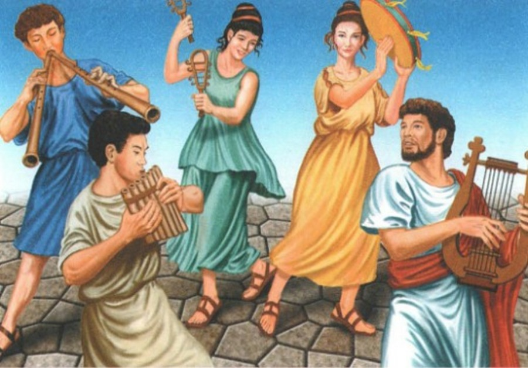
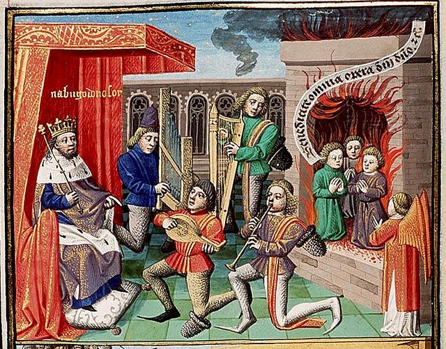
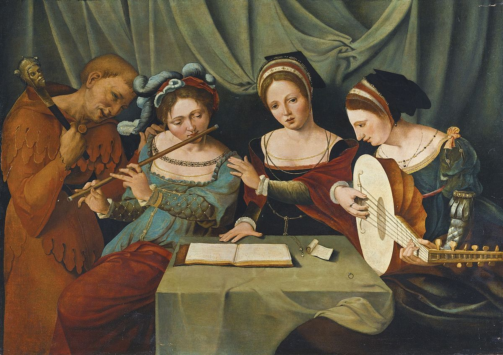
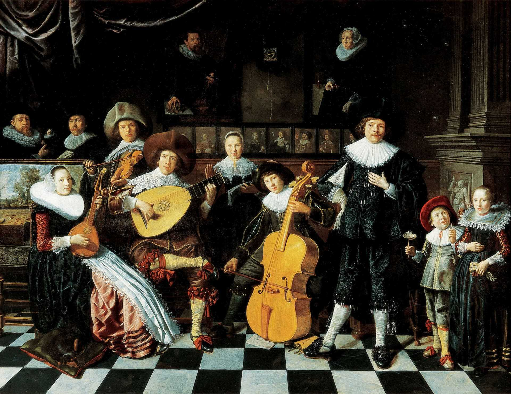
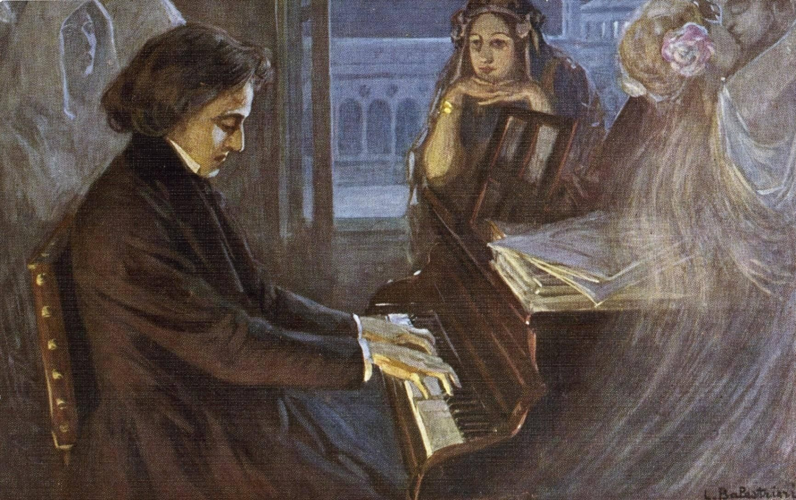
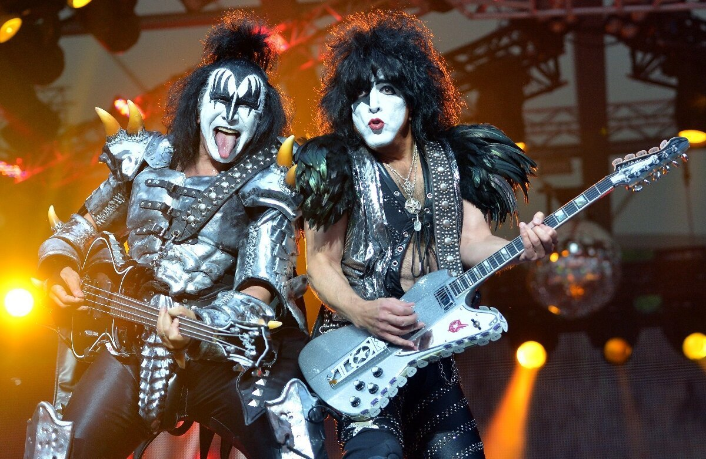

Древняя музыка (до 476 года н.э.)
Древняя музыка была тесно связана с религиозными и обрядовыми практиками. Использовались инструменты, такие
как флейта, лира и барабаны.
Популярные треки:
- Нет прямых записей, но существуют реконструкции древних мелодий.
Популярные исполнители:
- Античные музыканты и хоры.
Прослушать музыку:

Средневековая музыка (476 год - 1400 год)
Средневековая музыка была сильно связана с церковными ритуалами. Популярные жанры включали григорианский
хорал и мировую музыку.
Популярные треки:
- "Dies Irae" (Григорианский хорал).
Популярные исполнители:
- Анонимные композиторы и монахи.
Прослушать музыку:

Ренессанс (1400 год - 1600 год)
Время ренессанса принесло новые гармонии и мелодии. Использовались музыкальные инструменты, такие как лютня и
клавесин.
Популярные треки:
- "Ave Maria" (Композитор: Томас Луис де Виктория).
Популярные исполнители:
- Жоао Паес Лобо
- Орландо ди Лассо
Прослушать музыку:

Барокко (1600 год - 1750 год)
Барокко характеризовалось сложными оркестровыми произведениями и виртуозными исполнениями. Появление
оперы.
Популярные треки:
- "Four Seasons" (Композитор: Антонио Вивальди)
Популярные исполнители:
- Иоганн Себастьян Бах
- Джордж Фридерик Гендель
Прослушать музыку:
Классицизм (1750 год - 1820 год)
Классицизм принес простую и симметричную музыку. Развитие симфонии и сонаты.
Популярные треки:
- "Симфония №9" (Композитор: Людвиг ван Бетховен).
Популярные исполнители:
- Вольфганг Амадей Моцарт
- Людвиг ван Бетховен
Прослушать музыку:

Романтизм (1820 год - 1910 год)
Эпоха романтизма принесла экспрессивную и эмоциональную музыку. Расцвет оперы и лирической музыки.
Популярные треки:
- "Лебединое озеро" (Композитор: Петр Ильич Чайковский)
Популярные исполнители:
- Петр Ильич Чайковский
- Фредерик Шопен
Прослушать музыку:
Джаз и блюз (начало 20 века)
Джаз и блюз развивались в США и стали символами афроамериканской музыкальной культуры. Импровизация и ритм
были важными элементами.
Популярные треки:
- "Summertime" (Исполнитель: Элла Фицджеральд)
Популярные исполнители:
- Луи Армстронг
- Майлз Дэвис
Прослушать музыку:

Рок-н-ролл (1950 годы)
Рок-н-ролл был воплощением молодежной культуры и бунта. Характеризовался энергичными ритмами и гитарными
риффами.
Популярные треки:
- "Rock Around the Clock" (Исполнитель: Билл Хейли)
Популярные исполнители:
Прослушать музыку:
Современная поп-музыка (с 1980 годов)
Современная поп-музыка включает разнообразные стили и жанры. Используются электронные инструменты и
технологии.
Популярные треки:
- "Shape of You" (Исполнитель: Эд Ширан)
Популярные исполнители:
Прослушать музыку:
Copyright 2023 @gavrilovds. Все права защищены